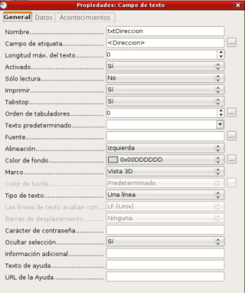
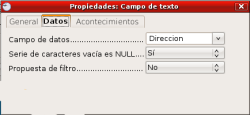

En nuestro formulario de ejemplo hemos visto que los campos aparecen
con una etiqueta y el rectángulo donde se muestran o introducimos los
datos del campo, son los campos de texto. Pero no es esta la única
forma de mostrar los datos en un formulario ya que dependiendo del tipo
de datos que representan podemos utilizar otros tipos.
Bases de Datos
5.4. Formas de mostrar un Campo
Campos de texto
Para introducir un campo de texto también podemos seleccionar el botón Campo de texto en la barra de herramientas Campos de control de formulario y trazar un rectángulo en el formulario, entonces aparecerá un campo de texto vacío al que posteriormente podremos asignar un campo de la tabla y las propiedades correspondientes.
Es preciso aclarar que cuando se añaden los campos desde el Asistente o desde la ventana para añadir nuevos campos estos aparecen como campos de texto con su correspondiente etiqueta, pero cuando añadimos un campo de texto directamente al formulario sólo aparece el espacio del campo. Para seleccionar por separado la etiqueta o el campo es necesario hacer clic sobre cualquiera de ellos mientras mantenemos pulsada la tecla Control.
Si hacemos doble clic sobre el nuevo campo de texto creado podremos ver que el cuadro de diálogo Propiedades, de la figura siguiente, que nos muestra muchas más opciones para configurar el nuevo campo que acabamos de añadir. Si seleccionamos un campo cualquiera sin su etiqueta y después hacemos doble clic sobre él veremos estas mismas propiedades.

Dentro de la pestaña General aparecen muchas opciones que veremos a continuación:
- Longitud máx. del texto: Define el número máximo de caracteres que el usuario podrá introducir en ese campo. Si no se define esta propiedad aparece con un cero indicando así que la longitud se adopta de la definida en la tabla.
- Activado: Cuando esta propiedad está en “Sí” el usuario del formulario puede utilizar dicho campo para introducir datos, si esta propiedad está en “No” aparecerá en color gris y no se podrá utilizar.
- Sólo lectura: Se asigna “Sí” cuando deseamos prohibir que el usuario pueda insertar datos nuevos en la base de datos.
- Tabstop: Esta propiedad determina si un campo se puede seleccionar con la tecla Tabulación. Si la marcamos como “No” nunca accederemos a este campo pulsando la tecla Tabulación.
- Orden de tabuladores: En esta propiedad establecemos el orden de tabulación de este campo. Al crear un formulario, a cada campo se le asigna automáticamente un índice de tabulación pero nosotros podemos modificar el orden utilizando esta propiedad.
- Texto predeterminado: En esta propiedad podemos escribir el texto que queremos que aparezca ya escrito por defecto para facilitar nuestra tarea.
- Tipo de texto: Nos permite decidir si el contenido del campo aparecerá en una línea, en múltiples línea o en múltiples líneas con formato. Si elegimos múltiples líneas nos permitirá crear nuevas líneas cada vez que pulsemos la tecla Intro.
- Líneas de texto acaban con: En esta propiedad, que sólo estará activa si seleccionamos múltiples líneas, podemos elegir el tipo de final de línea que utilizaremos al escribir el texto y dependiendo del sistema operativo que vayamos a utilizar.
- Barras de desplazamiento: Agrega al cuadro de texto el tipo de barras de desplazamiento que indiquemos.
- Ocultar selección: Nos permite especificar si una selección de texto en un control permanece seleccionada cuando el control deja de estar activo. Si colocamos esta propiedad en "No", el texto seleccionado permanece seleccionado cuando el control que contiene el texto deja de estar activo.
Dentro de la pestaña Datos del cuadro de Propiedades contamos con menos opciones pero es necesario que las configuremos para que el nuevo campo de texto contenga los datos que realmente queremos que tenga. En la figura siguiente podemos ver el contenido de esta pestaña.

- Campo de datos: En este cuadro de lista podemos seleccionar el campo de la base de datos que queremos que aparezca en el campo de texto que estamos definiendo.
- Serie de caracteres vacía es NULL: Nos permite especificar cómo debe actuar ante la entrada de una cadena vacía. Así, si está colocada en “Sí” e introducimos uno o varios espacios lo interpretará como un valor NULL y lo almacenará en la base de datos. Si colocamos la propiedad en “No” la cadena de espacios será tratada como un valor vacío.
- Propuesta de filtro: Si colocamos esta propiedad en “Sí” indicamos que al realizar búsquedas en modo filtro se puede seleccionar toda la información contenida en los campos activados y el contenido del campo se puede seleccionar mediante la función Completar palabras. Conviene dejar esta propiedad en “No” porque precisa de mucha memoria y tiempo de acceso, sobre todo si usamos bases de datos de mucho tamaño.
Campo de Texto con Formato
Se trata de un campo de texto especial que permite aplicar automáticamente un formato al contenido del mismo. Si el campo está conectado a un campo de texto de una base de datos, las entradas de dicho campo se tratarán como texto. Si el campo formateado está conectado con un campo de la base de datos que puede mostrarse en formato numérico, las entradas se tratarán como números. Internamente, la fecha y la hora se gestionan también como números.
Las propiedades de este tipo de campo ofrecen algunas diferencias que vemos a continuación:
- Campo giratorio: Si se trata de campos numéricos, de moneda, de fecha y hora se pueden insertar como campos giratorios en el formulario.
- Repetir: Nos permite indicar si la acción se repite al hacer clic en el control y mantener pulsado el botón del ratón.
- Retraso: Se activa si elegimos “Sí” en Repetir y sirve para especificar el retraso, en milisegundos, entre los eventos que se repiten.
- Formato: Nos permite seleccionar el formato en el que se presentarán los datos. Para asignar un formato debemos hacer clic sobre el botón con puntos suspensivos que aparece a su derecha y aparecerá el cuadro de diálogo Formato numérico.
Una vez hayamos seleccionado el tipo de dato que queremos mostrar, en el cuadro de lista Formato podemos seleccionar uno de los formatos predeterminados que nos ofrece.
Si se trata de representar números en la sección Opciones podremos indicar el número de decimales, el número de ceros a la izquierda y si queremos que los números negativos aparezcan de color rojo o si las cantidades deben llevar el separador de miles.
En el cuadro de texto Código del formato podemos establecer nuestros propios diseños de formato para mostrar los datos con lo que estaríamos utilizando una categoría Definida por el usuario.
Casilla de Verificación
Determinados datos de una base de datos conviene mostrarlos en forma de casillas porque resulta más fácil visualizarlos. Las casillas de verificación permiten que se marquen más de una a la vez.
- Imagen: En esta propiedad nos permite colocar una imagen, más o menos grande en el texto de las casillas.
- Alineación de gráficos: Nos permite indicar en qué posición se colocará el gráfico que se inserta.
- Estado triple: Nos permite especificar si una casilla de verificación puede representar también valores Zero de una base de dato vinculada, además de los valores True y False. Esta opción sólo estará disponible si la base de datos acepta estos tres estados.
Botón
Los botones podemos situarlos en el formulario para realizar diferentes tipos de acciones, así podemos colocar un botón para ir al siguiente registro, o al anterior, o para borrar el contenido del formulario, etc.
Los botones también tienen sus propiedades específicas:
- Si colocamos la propiedad en “Sí” podemos alternar entre el estado “Seleccionado” y “No Seleccionado”.
- Activar al hacer clic: si seleccionamos “Sí” indicamos que el botón debe activarse al hacer clic sobre él.
- Acción: nos muestra una lista de posibles acciones para asignar al botón que acabamos de crear.
Botón de Opción
El botón de opción es un botón circular que podemos activar para indicar una condición concreta. Este tipo de botones suelen ir agrupados en un grupo que se crea a través de la herramienta Cuadro de grupo y dentro del grupo sólo se permite marcar uno de ellos.
Así podríamos utilizar este tipo de botones para crear un grupo “Sexo” en el que existirán dos botones “Hombre” y “Mujer”.
Para crear un cuadro de grupo es necesario hacer clic en el botón Más campos de control de la barra de herramientas Campos de control de formulario y veremos aparecer una nueva barra de herramientas llamada Más campos de control. Dentro de esta nueva barra seleccionamos el botón Cuadro de grupo y trazamos un rectángulo en nuestro formulario con lo que aparecerá el cuadro de diálogo Asistente: elemento de grupo.
Si queremos cambiar las propiedades de uno de los botones interiores del cuadro hacemos clic sobre cualquiera de ellos manteniendo pulsada la tecla Control y el cuadro Propiedades mostrará las propiedades de ese botón en concreto. Entre estas propiedades sólo encontramos como nueva la propiedad Estado predeterminado en el que podemos indicar Seleccionado si queremos que ese botón aparezca activado por defecto o No seleccionado en caso contrario.
Listado
Los cuadros de lista que podemos crear dentro de un formulario nos permiten utilizar los datos de una tabla como lista de objetos para elegir. Así podemos crear un listado con los cursos que tenga nuestro centro de tal forma que en vez de escribir el curso de un alumno tengamos que seleccionarlo y de ese modo evitamos el que se comentan errores poniendo unas veces “3A”, otras “3ºA”, o tras “3º A”, etc.
Para crear un listado debemos seleccionar la herramienta Listado y trazar un recuadro en el formulario. Al terminar de trazarlo aparecerá el Asistente: cuadro de lista para guiarnos en la creación de nuestro cuadro de lista.
Campo Combinado
El cuadro combinado es un tipo especial de cuadro que muestra, por un lado un cuadro de texto y por otro un cuadro de lista. El cuadro combinado nos permite elegir uno de los datos de la lista o introducir un nuevo dato si no se encuentra en la lista.
Para crear un cuadro combinado debemos seguir los mismos pasos que para la creación de un listado